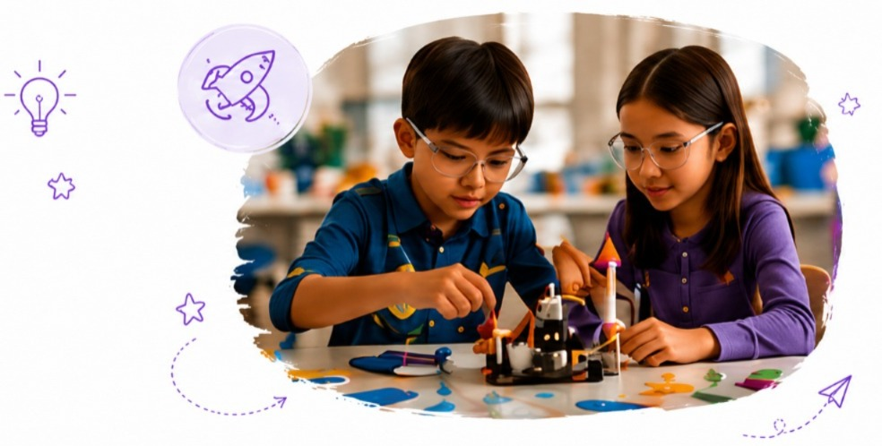
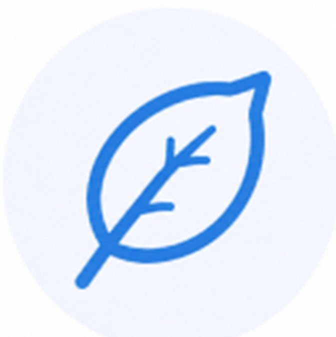

Young Ideas Lab
Ask. Imagine. Invent. Solve.
Young Ideas Lab encourages children to think curiously, ask questions, and try new things. They experiment, solve problems, and turn simple ideas into real solutions.

Children Explore
Problem Solving
Inventions & Ideas
Coding Basics
Design Thinking
Skills Children Naturally Build
- Critical thinking
- Creativity
- Curiosity
- Persistence
- Logical reasoning
Children Grow
 Shape the Experience
Shape the Experience
Children suggest ideas, choose challenges, and help decide what we explore and build.
Making an Impact
Children’s ideas can become inventions, solutions, and projects that help our community and make life better.

What Parents Should Know
Sessions blend guided challenges with open exploration time. Children investigate questions, work individually and in small teams, and share what they discover at the end of each experience.
We provide lab kits, building materials, tablets for coding activities, and safe experiment supplies. Children are encouraged to bring recycled items for invention projects. Workspaces are set up for hands-on learning.
All activities are age-appropriate with adult guidance. Tools and experiments are introduced with clear safety instructions. Small group sizes ensure every child gets attention and support.
Young Ideas Lab runs as part of Bright Dreamers experiences throughout the year. Visit our Get Involved page or contact us to learn about upcoming sessions, age groups, and how to register your child.
Big ideas can come from small questions.
Learn More About This Experience